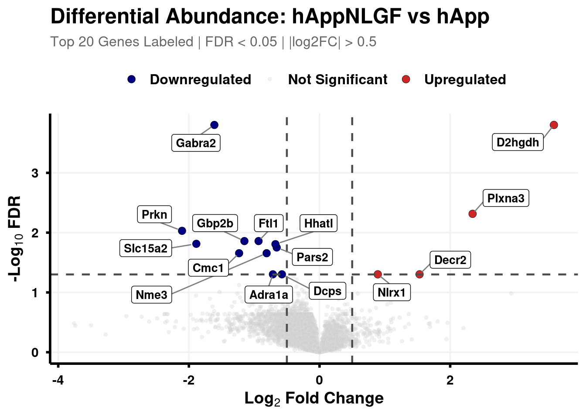
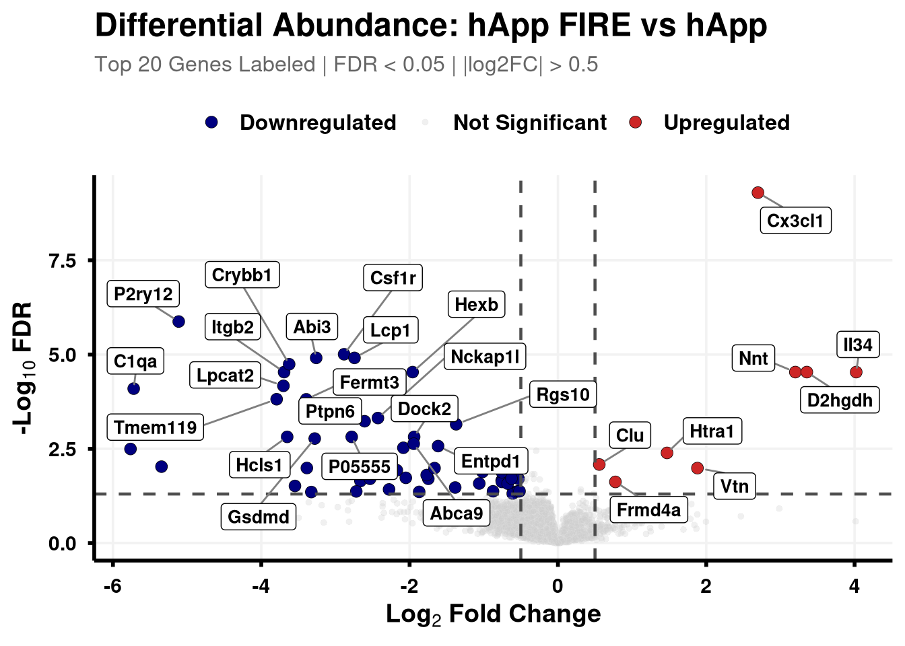
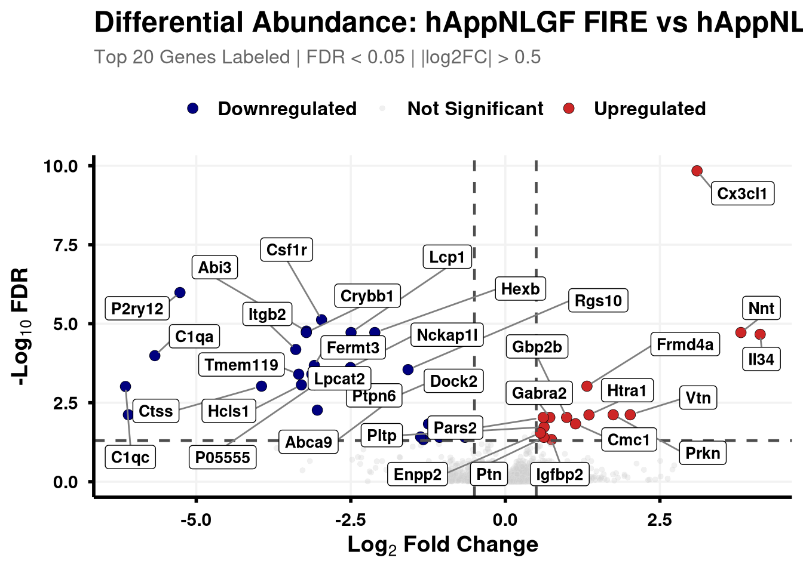
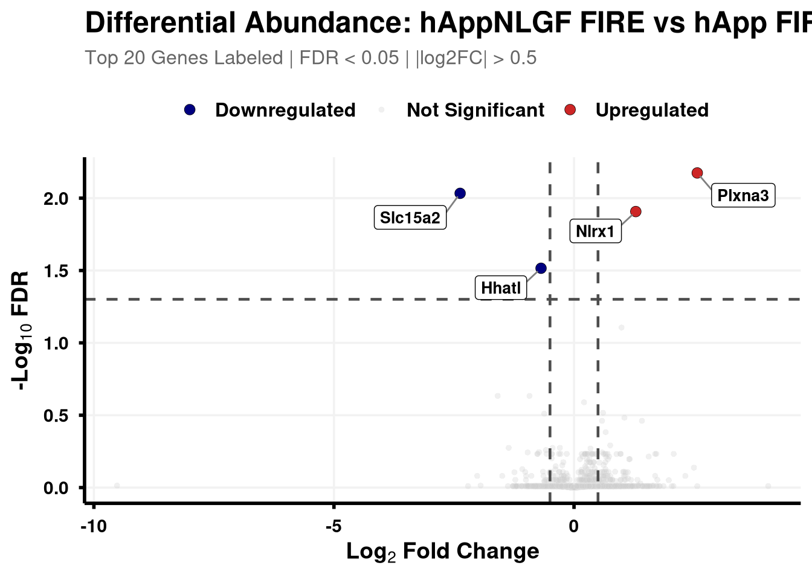

clean_spec_raw <-fread(file.path(base_dir, "data/processed/run1/clean_spec_raw.csv"))protein_dictionary <- clean_spec_raw %>% dplyr::select(Protein = PG.ProteinGroups, Accession = PG.ProteinAccessions) %>%distinct() %>%# Spectronaut can list multiple accessions separated by semicolons.# We extract the first one to use as our search key.mutate(Primary_Accession =str_extract(Accession, "^[^;]+"))cat("Mapping Genes and Descriptions...\n")
Mapping Genes and Descriptions...
Code
# 2. Map UniProt Accessions to Gene Symbolsprotein_dictionary$Gene <-mapIds(x = org.Mm.eg.db,keys = protein_dictionary$Primary_Accession,column ="SYMBOL",keytype ="UNIPROT",multiVals ="first")# 3. Map UniProt Accessions to Protein Names/Descriptionsprotein_dictionary$Description <-mapIds(x = org.Mm.eg.db,keys = protein_dictionary$Primary_Accession,column ="GENENAME", keytype ="UNIPROT",multiVals ="first")# 4. Clean up the dictionary (fill NAs and drop the temp column)protein_dictionary <- protein_dictionary %>%mutate(Gene =ifelse(is.na(Gene), Primary_Accession, Gene),Description =ifelse(is.na(Description), "Uncharacterized protein", Description) ) %>% dplyr::select(-Primary_Accession)fwrite(protein_dictionary, file.path(objects_dir,"protein_dictionary.csv" ))
Volcano function
Boundary cut-offs of 0.05 FDR and +/- 0.58 Log2FC (1.5x).
Code
# Define coloursvolcano_cols <-c("Upregulated"="firebrick3", "Downregulated"="navy", "Not Significant"="grey80")generate_swanky_volcano <-function(msstats_results, dict, comparison_label, logfc_cutoff =0.5, graphs_dir ="results") {# --- Data Processing --- volcano_data <- msstats_results %>%# Isolate the specific comparison and drop missing valuesfilter(Label == comparison_label, !is.na(adj.pvalue), is.finite(log2FC)) %>%# Map the Gene names from the dictionaryleft_join(dict, by ="Protein") %>%mutate(# Fallback to Protein ID if Gene name is missingGene =ifelse(is.na(Gene) | Gene =="", Protein, Gene),# Define significance categoriesStatus =case_when( adj.pvalue <0.05& log2FC > logfc_cutoff ~"Upregulated", adj.pvalue <0.05& log2FC <-logfc_cutoff ~"Downregulated",TRUE~"Not Significant" ) ) %>%# Group by Status to rank Upregulated and Downregulated separatelygroup_by(Status) %>%# Rank by FDR (smallest adj.pvalue = 1)mutate(GroupRank =rank(adj.pvalue, ties.method ="first")) %>%ungroup() %>%mutate(# Label top 20 for each significant categoryPlotLabel =case_when( Status !="Not Significant"& GroupRank <=20~ Gene, TRUE~NA_character_ ) )# --- Plotting --- p <-ggplot(volcano_data, aes(x = log2FC, y =-log10(adj.pvalue), fill = Status, color = Status)) +geom_point(aes(size = Status, alpha = Status), shape =21, stroke =0.2) +scale_fill_manual(values = volcano_cols) +scale_color_manual(values =c("Upregulated"="black", "Downregulated"="black", "Not Significant"="grey90")) +scale_size_manual(values =c("Upregulated"=3, "Downregulated"=3, "Not Significant"=1.5)) +scale_alpha_manual(values =c("Upregulated"=1, "Downregulated"=1, "Not Significant"=0.3)) +geom_hline(yintercept =-log10(0.05), linetype ="dashed", color ="grey30", linewidth =0.8) +geom_vline(xintercept =c(-logfc_cutoff, logfc_cutoff), linetype ="dashed", color ="grey30", linewidth =0.8) +geom_label_repel(aes(label = PlotLabel),fill ="white", color ="black", fontface ="bold", size =3.5,box.padding =0.5, point.padding =0.5,min.segment.length =0, segment.color ="grey50", max.overlaps =50 ) +labs(title =paste0("Differential Abundance: ", gsub("_", " ", comparison_label)),subtitle =paste0("Top 20 Genes Labeled | FDR < 0.05 | |log2FC| > ", logfc_cutoff),x =bquote(bold("Log"[2] ~"Fold Change")),y =bquote(bold("-Log"[10] ~"FDR")) ) +theme_minimal(base_size =14) +theme(plot.title =element_text(face ="bold", size =18, hjust =0),plot.subtitle =element_text(size =12, color ="grey40", margin =margin(b =10)),axis.title =element_text(face ="bold", size =14),axis.text =element_text(face ="bold", color ="black"),axis.line =element_line(color ="black", linewidth =1),axis.ticks =element_line(color ="black", linewidth =1),legend.position ="top",legend.title =element_blank(),legend.text =element_text(size =12, face ="bold"),panel.grid.minor =element_blank(),panel.grid.major =element_line(color ="grey95") )# --- Output Generation ---# Ensure directory existsdir.create(graphs_dir, showWarnings =FALSE, recursive =TRUE) safe_name <-gsub(" ", "_", comparison_label)# Save Plotggsave(filename =file.path(graphs_dir, paste0("Volcano_", safe_name, "_Swanky.pdf")), plot = p, width =10, height =7, dpi =300,device = cairo_pdf )# Save Data Table# Select only the most useful columns and sort by significance for easy reading export_data <- volcano_data %>% dplyr::select(Protein, Gene, Description, log2FC, pvalue, adj.pvalue, Status) %>%arrange(adj.pvalue)fwrite(export_data, file =file.path(graphs_dir, paste0("Volcano_Data_", safe_name, ".csv")))return(p)}
Iterate through comparisons to generate plots and useful DE tables
Code
all_comparisons <-unique(res_df$Label)# 2. Loop through each comparison, generate the plot/data, and store the plots in a listplot_list <-list()for (comp in all_comparisons) { p <-generate_swanky_volcano(msstats_results = res_df, dict = protein_dictionary, comparison_label = comp, logfc_cutoff =0.5, graphs_dir = results_dir )# Store the plot in our list plot_list[[comp]] <- p# Print the plot so it appears in HTML outputprint(p)}




Source Code
---title: "3. DE plots"---## Libraries```{r setup, include=FALSE, message=FALSE}library(data.table)library(qs2)library(dplyr)library(ggplot2)library(ggrepel)library(MSstats)library(stringr)library(AnnotationDbi)library(org.Mm.eg.db)```## Directories```{r}base_dir <-"/nemo/lab/destrooperb/home/shared/zanettc/giulia_proteomics"run_num <-"run3"results_dir <-file.path(base_dir, "results", run_num)objects_dir <-file.path(base_dir, "data", "processed", run_num)input_dir <-file.path(base_dir, "input")dir.create(results_dir, recursive =TRUE, showWarnings =FALSE)dir.create(objects_dir, recursive =TRUE, showWarnings =FALSE)```## Read in MSstats output```{r}res_df <-fread(file.path(results_dir, "Full_GroupComparison_Results.csv"))```## Mapping protein IDs to gene names```{r}clean_spec_raw <-fread(file.path(base_dir, "data/processed/run1/clean_spec_raw.csv"))protein_dictionary <- clean_spec_raw %>% dplyr::select(Protein = PG.ProteinGroups, Accession = PG.ProteinAccessions) %>%distinct() %>%# Spectronaut can list multiple accessions separated by semicolons.# We extract the first one to use as our search key.mutate(Primary_Accession =str_extract(Accession, "^[^;]+"))cat("Mapping Genes and Descriptions...\n")# 2. Map UniProt Accessions to Gene Symbolsprotein_dictionary$Gene <-mapIds(x = org.Mm.eg.db,keys = protein_dictionary$Primary_Accession,column ="SYMBOL",keytype ="UNIPROT",multiVals ="first")# 3. Map UniProt Accessions to Protein Names/Descriptionsprotein_dictionary$Description <-mapIds(x = org.Mm.eg.db,keys = protein_dictionary$Primary_Accession,column ="GENENAME", keytype ="UNIPROT",multiVals ="first")# 4. Clean up the dictionary (fill NAs and drop the temp column)protein_dictionary <- protein_dictionary %>%mutate(Gene =ifelse(is.na(Gene), Primary_Accession, Gene),Description =ifelse(is.na(Description), "Uncharacterized protein", Description) ) %>% dplyr::select(-Primary_Accession)fwrite(protein_dictionary, file.path(objects_dir,"protein_dictionary.csv" ))```## Volcano functionBoundary cut-offs of 0.05 FDR and +/- 0.58 Log2FC (1.5x).```{r}# Define coloursvolcano_cols <-c("Upregulated"="firebrick3", "Downregulated"="navy", "Not Significant"="grey80")generate_swanky_volcano <-function(msstats_results, dict, comparison_label, logfc_cutoff =0.5, graphs_dir ="results") {# --- Data Processing --- volcano_data <- msstats_results %>%# Isolate the specific comparison and drop missing valuesfilter(Label == comparison_label, !is.na(adj.pvalue), is.finite(log2FC)) %>%# Map the Gene names from the dictionaryleft_join(dict, by ="Protein") %>%mutate(# Fallback to Protein ID if Gene name is missingGene =ifelse(is.na(Gene) | Gene =="", Protein, Gene),# Define significance categoriesStatus =case_when( adj.pvalue <0.05& log2FC > logfc_cutoff ~"Upregulated", adj.pvalue <0.05& log2FC <-logfc_cutoff ~"Downregulated",TRUE~"Not Significant" ) ) %>%# Group by Status to rank Upregulated and Downregulated separatelygroup_by(Status) %>%# Rank by FDR (smallest adj.pvalue = 1)mutate(GroupRank =rank(adj.pvalue, ties.method ="first")) %>%ungroup() %>%mutate(# Label top 20 for each significant categoryPlotLabel =case_when( Status !="Not Significant"& GroupRank <=20~ Gene, TRUE~NA_character_ ) )# --- Plotting --- p <-ggplot(volcano_data, aes(x = log2FC, y =-log10(adj.pvalue), fill = Status, color = Status)) +geom_point(aes(size = Status, alpha = Status), shape =21, stroke =0.2) +scale_fill_manual(values = volcano_cols) +scale_color_manual(values =c("Upregulated"="black", "Downregulated"="black", "Not Significant"="grey90")) +scale_size_manual(values =c("Upregulated"=3, "Downregulated"=3, "Not Significant"=1.5)) +scale_alpha_manual(values =c("Upregulated"=1, "Downregulated"=1, "Not Significant"=0.3)) +geom_hline(yintercept =-log10(0.05), linetype ="dashed", color ="grey30", linewidth =0.8) +geom_vline(xintercept =c(-logfc_cutoff, logfc_cutoff), linetype ="dashed", color ="grey30", linewidth =0.8) +geom_label_repel(aes(label = PlotLabel),fill ="white", color ="black", fontface ="bold", size =3.5,box.padding =0.5, point.padding =0.5,min.segment.length =0, segment.color ="grey50", max.overlaps =50 ) +labs(title =paste0("Differential Abundance: ", gsub("_", " ", comparison_label)),subtitle =paste0("Top 20 Genes Labeled | FDR < 0.05 | |log2FC| > ", logfc_cutoff),x =bquote(bold("Log"[2] ~"Fold Change")),y =bquote(bold("-Log"[10] ~"FDR")) ) +theme_minimal(base_size =14) +theme(plot.title =element_text(face ="bold", size =18, hjust =0),plot.subtitle =element_text(size =12, color ="grey40", margin =margin(b =10)),axis.title =element_text(face ="bold", size =14),axis.text =element_text(face ="bold", color ="black"),axis.line =element_line(color ="black", linewidth =1),axis.ticks =element_line(color ="black", linewidth =1),legend.position ="top",legend.title =element_blank(),legend.text =element_text(size =12, face ="bold"),panel.grid.minor =element_blank(),panel.grid.major =element_line(color ="grey95") )# --- Output Generation ---# Ensure directory existsdir.create(graphs_dir, showWarnings =FALSE, recursive =TRUE) safe_name <-gsub(" ", "_", comparison_label)# Save Plotggsave(filename =file.path(graphs_dir, paste0("Volcano_", safe_name, "_Swanky.pdf")), plot = p, width =10, height =7, dpi =300,device = cairo_pdf )# Save Data Table# Select only the most useful columns and sort by significance for easy reading export_data <- volcano_data %>% dplyr::select(Protein, Gene, Description, log2FC, pvalue, adj.pvalue, Status) %>%arrange(adj.pvalue)fwrite(export_data, file =file.path(graphs_dir, paste0("Volcano_Data_", safe_name, ".csv")))return(p)}```## Iterate through comparisons to generate plots and useful DE tables```{r}all_comparisons <-unique(res_df$Label)# 2. Loop through each comparison, generate the plot/data, and store the plots in a listplot_list <-list()for (comp in all_comparisons) { p <-generate_swanky_volcano(msstats_results = res_df, dict = protein_dictionary, comparison_label = comp, logfc_cutoff =0.5, graphs_dir = results_dir )# Store the plot in our list plot_list[[comp]] <- p# Print the plot so it appears in HTML outputprint(p)}```